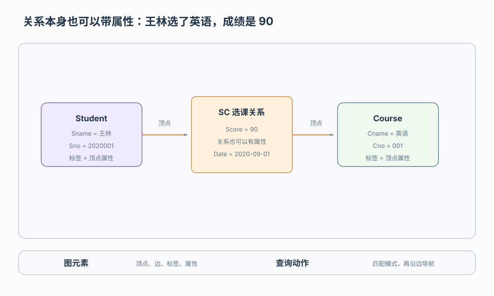

顶点 V
业务对象：王林、英语等学生和课程
当联系本身成为查询对象
 VER. 2608.3
Built with impress.js
VER. 2608.3
Built with impress.js
完成本节后，你应该能够
属性图把学生、课程和选课关系表示为顶点、边与属性

选课案例把形式元素映射到学生能复述的业务对象
业务对象：王林、英语等学生和课程
业务关系：SC 选课，连接王林与英语
类型分类：Student、Course、SC
字段和值：Score=90、Date=2020-09-01
本例只需理解图元素与业务语义的对应关系
图模型把联系作为独立对象表达，是否采用图数据库仍取决于查询和约束需求
| 表达方式 | 直观含义 |
|---|---|
| 关系模型 | 通过 Student ⋈ SC ⋈ Course 组合业务事实 |
| 图模型 | 直接匹配并导航 Student — SC — Course 路径 |
查询谁选了什么课以及成绩时，图中的边是查询对象；关系系统也能表达同一事实
先分清每一步处理的对象，再判断它们如何组合
找出 Student—SC→Course 模式，例如王林选过的课程
沿学生→课程→教师寻找两跳关系
先匹配，再按成绩过滤并返回结果
SPARQL、Cypher 和 Gremlin 侧重不同模型与表达方式
| 语言 | 常见对象 | 直观方式 |
|---|---|---|
| SPARQL | RDF 三元组图 | 三元组匹配 |
| Cypher | 属性图 | 模式和路径表达 |
| Gremlin | 属性图 | 程序化遍历 |
SPARQL、Cypher 和 Gremlin 分属不同图模型与语言生态，尚未形成所有系统共同采用的统一语言
括号表示顶点，中括号表示关系，WHERE 过滤属性
01
02
03MATCH (n:Student)-[e:SC]->(c:Course)
WHERE n.Sname = "王林"
RETURN c.Cname, e.Scoren、e、c 是变量；Student、SC、Course 是标签；Sname、Score 是属性
MATCH 找模式；WHERE 过滤；RETURN 输出
预期结果是课程英语与成绩 90
顶点记录可维护邻接信息，但实现各异
| 访问路径 | 直观过程 |
|---|---|
| 关系系统 | 索引定位记录，再通过连接找到邻居 |
| 原生图存储 | 从顶点记录沿邻接关系定位邻居 |
Neo4j 作为代表性实现可支持事务；事务能力不等于所有图数据库的统一契约
图数据库是否更快取决于数据布局与查询模式是否匹配
图数据库适合关系密集、路径有意义的任务；关系数据库仍适合其他负载
顶点、边、标签、属性把业务网络表达出来
匹配、导航、复合操作分别回答不同路径问题
SPARQL、Cypher、Gremlin 各有模型与生态侧重
邻接存储有利于邻居访问；事务、报表与约束仍需按负载评估
强关联场景 → 属性图元素 → 图匹配与导航 → 查询语言 → 邻接存储与访问取舍
MATCH、WHERE、RETURN 查询王林的课程和成绩？